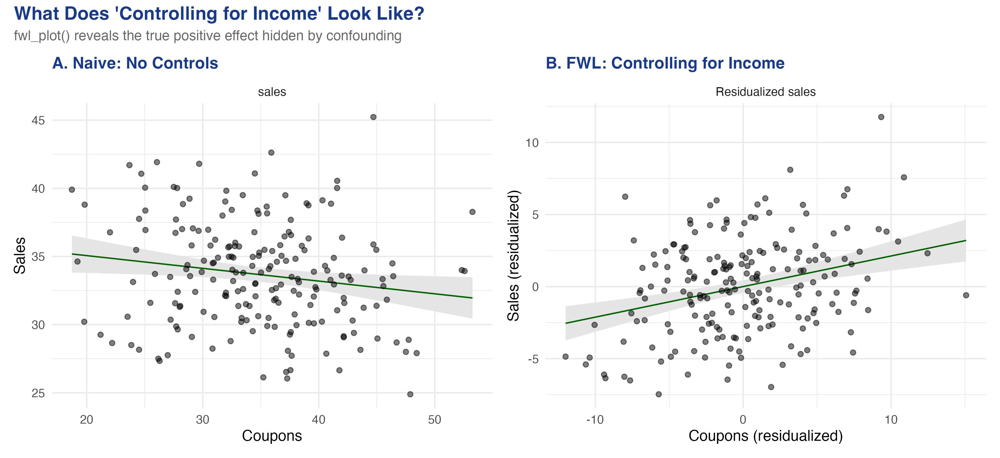
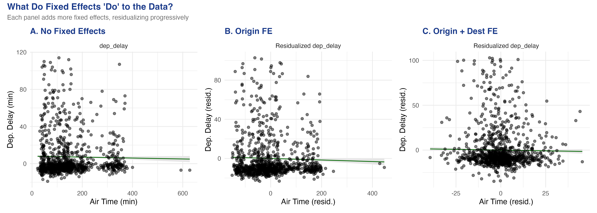
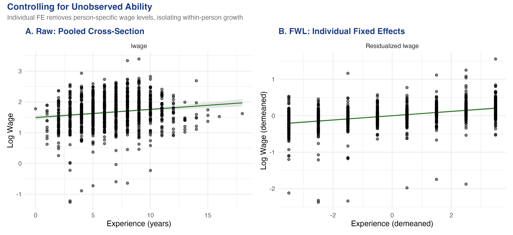

“Controlling for income” is a 4-D claim we keep trying to draw in 2-D
“The effect of coupons on sales, controlling for income” is a relationship in many dimensions.
You cannot put it on a scatter plot. Or can you?
A raw scatter says coupons hurt sales — and it is lying

Same data, two views. Left: the raw coupons–sales scatter slopes the wrong way. Right: after partialling income out of both axes, the true positive effect appears.
Where we’re going
A simulated store where we know the true coupon effect is +0.2
fwl_plot(): “controlling for income” in one line of R
Manual residualization that reproduces feols() to six decimals
Fixed effects = FWL on group dummies: flights, then a wage panel
The Investigation
Act II
The lab: 200 stores where income secretly drives both coupons and sales
Outcome — sales
Treatment — coupons (true effect \(+0.2\))
Confounder — income: rich areas get fewer coupons (\(-0.5\)) but buy more (\(+0.3\))
Income opens a backdoor path coupons ← income → sales. Block it, or the naive slope is biased.
The correlation matrix already shows the trap: coupons–sales is −0.166
Pair
correlation
coupons ↔︎ sales (raw)
−0.166
income ↔︎ coupons
−0.709
income ↔︎ sales
+0.500
A negative raw coupon–sales correlation, even though the true effect is positive — Simpson’s paradox in one table.
FWL: partial the controls out of both axes, then run one simple regression
\(\hat\gamma\) = income’s effect on sales; \(\hat\delta\) = slope of coupons on income. True \(+0.212\) plus bias \(-0.148\) ≈ the naive \(-0.093\).
Fixed effects are just FWL applied to group dummies — i.e. demeaning
Including airport (or person) fixed effects = partialling out each group’s mean from every variable.
A race handicap: convert raw times into “faster or slower than your own average,” then compare fairly.
More fixed effects = a tighter residual cloud: the flights data, panel by panel

No FE (left) → origin FE (centre) → origin + destination FE (right). Each step strips group means and shrinks the air-time spread toward within-route variation.
Once you compare flights on the same route, the air-time slope is barely there
Model
air_time
Within R²
No FE
−0.0031
—
Origin FE
−0.0061
0.00058
Origin + Dest FE
−0.0067
1.19e-5
Within-route, longer-than-usual air time predicts slightly less delay — possibly tail-wind days.
In a wage panel, controlling for who you are steepens the experience slope

Raw pooled cross-section (left) vs. individual fixed-effects residualized scatter (right): log wage against experience.
Within-person, the return to experience more than triples: 0.03 → 0.122
0.122
within-person return to experience (R² 0.148 → 0.617 once individual FE are added)
The Resolution
Act III
The residualized scatter is the exact picture of every regression coefficient
Raw scatter
All confounding still mixed in
Slope can flip sign (−0.093)
Lies about direction
FWL scatter
Controls partialled from both axes
Slope = the regression coefficient
The picture you should look at
Does FWL make a regression causal? No — it only makes it visible
Objection. If a residualized scatter recovers the “true” \(+0.212\), doesn’t FWL deliver the causal effect?
Response. No. FWL is an algebraic identity, not an identification strategy. The plot is honest only if you control for the right variables; partial out the wrong set and the scatter faithfully draws a biased number. And it holds exactly only for linear models.
Want to see a coefficient? Partial the controls out of both axes and plot the residuals.